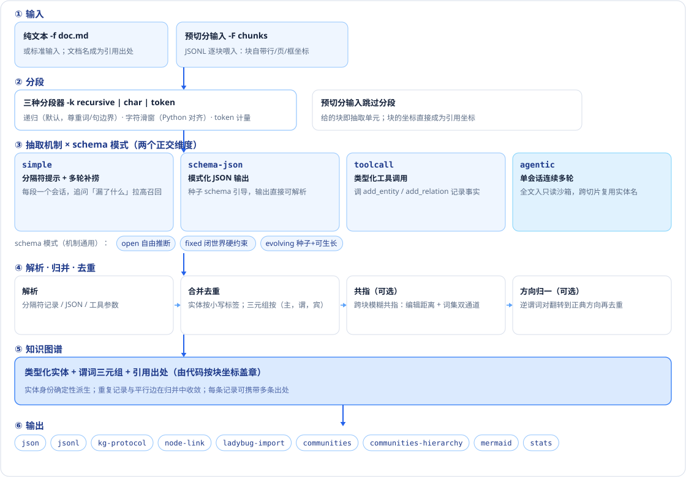
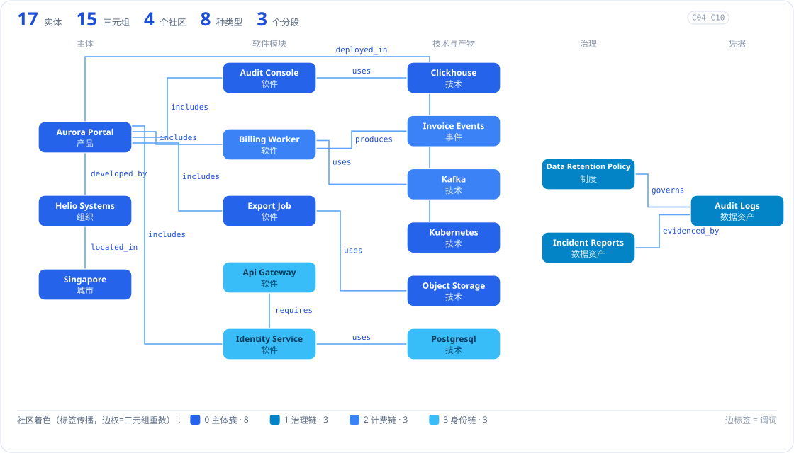
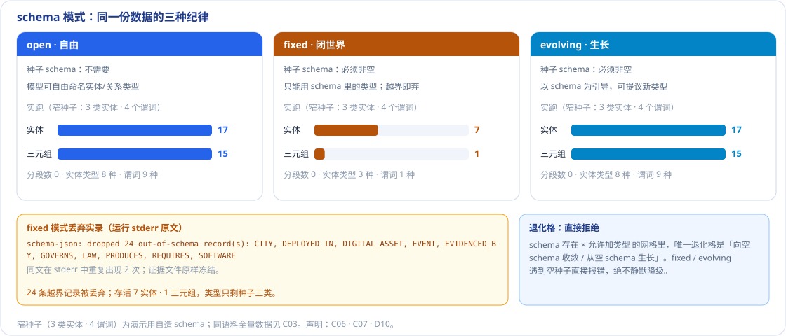
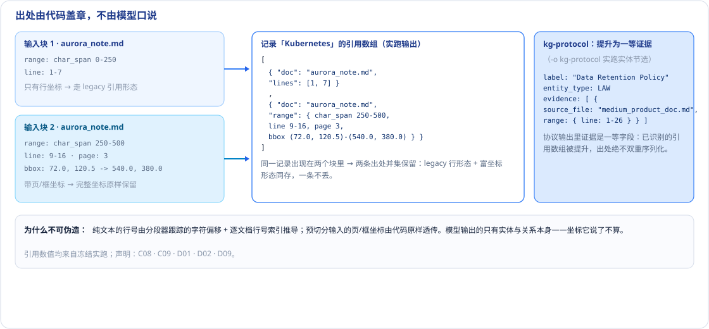
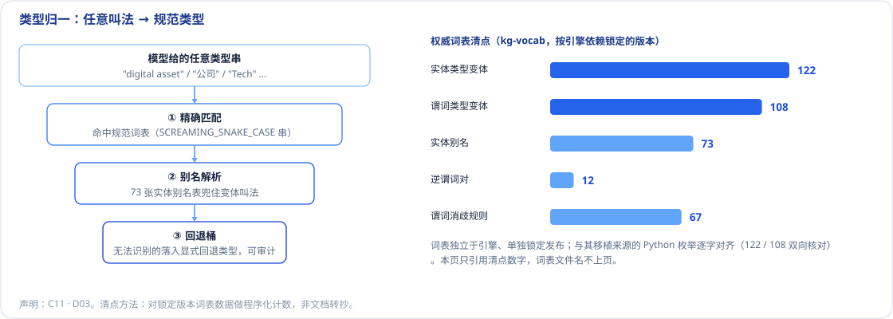
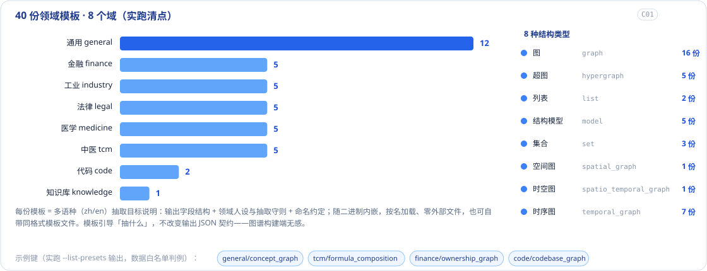
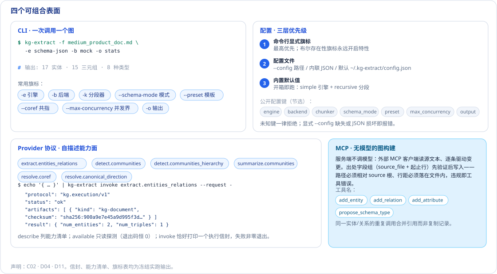

分段、抽取、归并、盖章——文本超长就切段并发，模型口径不一就用词表归一， 出处必须由代码按坐标钉死。机制与纪律两个维度全部可替换，输出的类型化三元组契约始终不变。
读者问题：这个引擎如何把长文档变成可信的知识图谱？为什么同一份契约能跑在四种机制、多种后端、九种输出上？
一条流水线、四种可替换的抽取机制、两个正交的 schema 纪律维度、九种输出序列化——所有箭头上的事实都来自冻结的实跑。

对一份真实 fixture 语料跑冻结实抽：分段 → 逐段抽取 → 归并去重，得到下面这张图。着色是社区检测的实跑结果：主体簇之外，治理、计费、身份三条功能链各自成团。

三条机制（分隔符提示 / 模式化 JSON / 工具调用）在同一语料、同一份事实数据上收敛到同一张 17/15 图；第四条机制 agentic 用单会话串行换取共指质量——取舍而非升级。
机制决定「怎么让模型说出事实」，schema 模式决定「允许说什么」：open 自由、fixed 闭世界硬丢弃、evolving 可生长。同一语料换模式重跑，丢弃行为直接可见、可审计。

每条实体/三元组携带它来自哪里的坐标：纯文本推导行号，预切分输入透传页码与边界框；同一记录多处出现则出处并集。协议输出把证据提升为一等字段。

模型口中的任意叫法经三级解析落到规范类型；规范词表独立锁定发布，双向核对移植来源。

模板是比扁平 schema 更高一级的抽取目标声明：领域人设 + 抽取守则 + 输出字段结构，内嵌二进制按名加载。

CLI 一次调用、配置三层优先级、provider 自描述协议、无模型的 MCP 图构建——同一引擎的四种进入方式。
